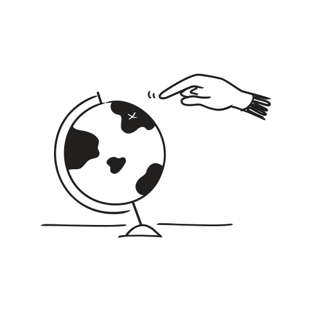

Activating the church, discipling the nations — and keeping it all organised. Here's how Notion can support the Movement Team's work in prayer, mobilisation, events, and global partnerships.
↗ Visit allnationsmovement.org
The Movement Team works with churches and leaders across many nations. A Notion database lets you track every relationship: church name, country, leader, last contact date, partnership tier, and active initiatives together.
You can filter by region, prayer partnership status, or ministry focus — and link each contact to the events, communications, and resources they're connected to. Nothing falls through the cracks.
Prayer is central to the Movement's DNA. Notion can serve as the hub for your global prayer network — a live database of requests, updates, and praise reports. Tag each entry by region, topic (revival, mission, leadership), and urgency.
Use a Gallery view to make it visual and engaging. Use a filtered view to surface what needs immediate prayer this week. Share specific filtered views with partner churches so they see only what's relevant to them.
The Movement Team runs major conferences and gatherings throughout the year. Each event gets its own Notion page — a complete project hub with speakers, logistics, registrations, comms plan, venue notes, and post-event review.
Use a master events database to see all upcoming gatherings at a glance. Switch to Calendar view to spot scheduling conflicts. Link each event to your partnership database to see which global contacts are involved.
AN Publishing, the Storehouse, Revival Ready, and the podcast — the Movement Team produces a significant volume of content and resources. A Notion publishing database keeps track of every project: title, author, status, publish date, platform, and sales/engagement notes.
Link each resource to the events that promote it and the partner churches that distribute it. See at a glance what's in writing, in review, ready to launch, and already out in the world.
The Movement's internship and mobilisation programme shapes the next generation of leaders. Notion can manage the entire pipeline — applications, interviews, placement decisions, training schedules, mentoring notes, and end-of-term reviews.
Each intern gets their own sub-page within the database — a private log of their goals, check-ins, and growth. Mentors can leave notes. Leaders get a board view showing everyone's stage at a glance.
The Movement Team spans multiple responsibilities and often operates across locations. Notion acts as a shared command centre — a single source of truth so Steve, Esther, Hannah, Gary and Endo always know what's happening, who owns what, and what's coming next.
A team dashboard page can surface: this week's priorities, upcoming travel and events, open action items, and key links — all in one place. No more hunting through email chains or WhatsApp threads to find a decision or document.
The team dashboard is your foundation. Start there and everything else connects to it — partnerships, events, resources, and prayer.